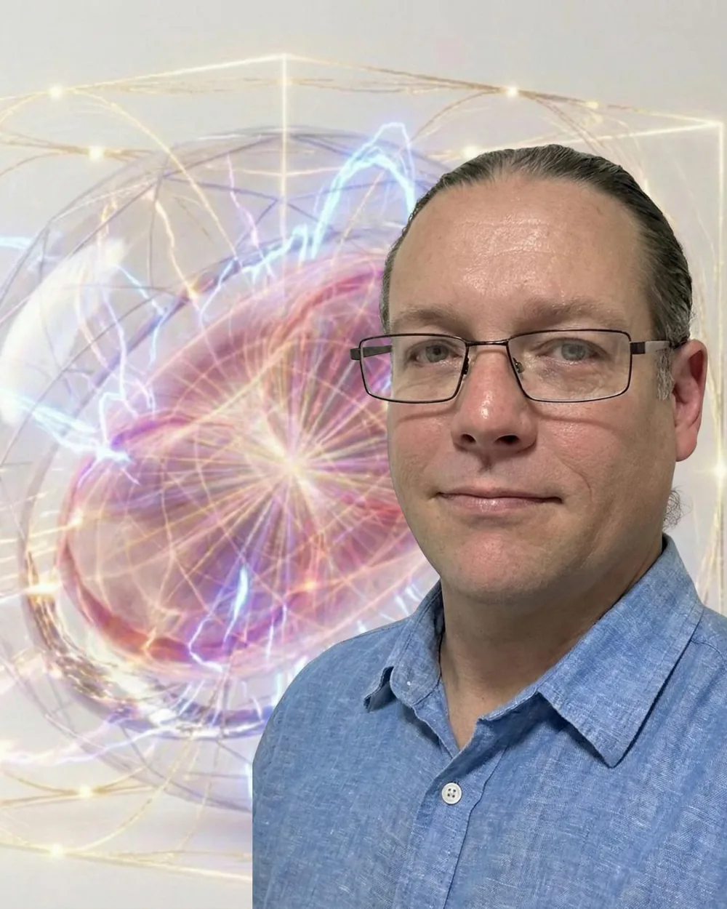

Conferences & summits
AI, technology, future of work, civic innovation and long-term futures.
Public speaking · Luke Nathan Hayes
Who owns the intelligence? Who shares in the capability? And what kind of civilisation are we preparing to become?
I speak from an Australian perspective as a global citizen, living on Minjerribah, also known as North Stradbroke Island.
I bring more than a decade of research and development in this arena, connecting personal Aura of Intelligence, community compute, sovereign AI, livelihoods, voluntary contribution, democratic renewal and long-term civilisation planning.

AI, technology, future of work, civic innovation and long-term futures.
Public lectures, research seminars and conversations across disciplines.
Councils, departments, portfolio holders and institutions considering what comes next.
The signature conversation
More capable AI raises questions about ownership, public institutions, human agency and the distribution of opportunity. I bring these questions together through a connected body of writing, public submissions, software prototypes, community proposals, music and civilisation-scale research.
The central invitation is to imagine and examine a future in which people can develop their own intelligence, share productive capability and participate in the systems shaping their lives.
Queensland has less than six years to come to terms with emergent superintelligence before the world's eyes turn to it for the Brisbane 2032 Olympic Games. I see that horizon as a reason to act now on personal Aura of Intelligence, community capability, sovereign infrastructure and public leadership.
The Olympic Games begin on 23 July 203201 / Personal agencyHow can people guide the intelligence that knows and represents them?
02 / Shared capabilityHow can compute, ownership and opportunity reach communities?
03 / A longer horizonHow can today's decisions support a civilisation capable of flourishing across generations?
Eight connected themes
Build an engagement around one theme, or follow the connections through the complete Fair Go conversation.
A developing personal Aura of Intelligence, bringing together a person's memories, skills, values, relationships and ambitions in a personal digital-twin environment. Explore what it means to reflect with AI while retaining authority to challenge, correct and guide its interpretations.
Explore personal Aura of Intelligence and civic IntelligenceA proposal for community-owned computing nodes connecting useful intelligence, heat, backup power, skills, maintenance and hardware renewal. Examine how financing, institutional hosts and co-operative ownership could turn computing infrastructure into enduring local capability.
Explore Installing the Missing MiddleWho holds personal and cultural data? Who chooses the models, hardware and rules? Consider consent, correction, portability and the ability to leave, alongside locally governed infrastructure that can cooperate through open interfaces.
Explore the sovereignty & governance workProductive ownership, business succession, paid mentoring, learning, care and time in the AI and automation transition. Explore ways retiring owners' knowledge and younger people's capability could support livelihoods, shared ownership and community renewal.
Explore Mutual FuturesOne C-Hour recognises one verified human hour freely given, with no monetary equivalent. Explore how care, learning, creativity and community participation can become visible through a shared measure of time, with communities shaping their own recognition and reciprocity. Paid work, voluntary contribution and real outcomes each keep their own records.
Explore the Community-Hour proposalA political vision and public civic workbench for Australia's future. Everyday humour opens into serious questions about participation, accountability, public evidence, legal memory, policy and democratic change in the age of powerful intelligence.
The Australian Household Bill Check gives that theme a concrete starting point. It connects the charge on a household bill with the evidence a community can use to ask for a change.
Explore P4APlanning for terrestrial and celestial threats, including existential risks, across generations: resilient energy, water, food, shelter, repair and retained knowledge, alongside space-weather preparedness and planetary defence. Research, simulations and storytelling help examine ambitious possibilities and their uncertainties.
Explore the civilisation-building workGlobal Association for Joyful Responsible Abundance on Earth. A proposal for cooperation through locally shaped associations, sovereign choices and shared planetary capability. How might nations, communities, institutions and people define better futures, test useful projects and share what they learn as peers?
Explore GAJRA Earth & possible futuresShape the engagement
Choose the format around the audience, the questions and what you want the engagement to open up.
Typically 45 to 60 minutes, plus Q&A
The connected Fair Go argument or a focused theme for an AI conference, leadership summit, public event or university lecture.
Typically 60 to 90 minutes
A closer examination with researchers, students, public leaders or practitioners, built around questions, evidence and competing possibilities.
Half-day, full-day or a series
Work through the implications for your institution, community or field, with time for project demonstrations, dialogue and practical next questions.
About the speaker
I am Luke Nathan Hayes, an independent researcher, writer, system builder and musician. I live on Minjerribah, also known as North Stradbroke Island, and speak from an Australian perspective as a global citizen. My work connects practical local projects with personal Aura of Intelligence, community ownership, Australian public policy and global futures.
Over more than a decade of research and development in this arena, I have developed writing, public submissions, websites, software tools, simulations, proposals and creative works that make these connected ideas available to examine and build upon.
Invite Luke
Enquiries are welcome from conference organisers, universities, government bodies and other institutions seeking a substantive engagement with these connected ideas.
Speaking engagements are quoted to the brief, including preparation, delivery, additional sessions and agreed use of the material. Travel, accommodation, recording and distribution rights are scoped separately. Strange but True is not currently registered for GST.
Engagements are offered by Luke Nathan Hayes trading as Strange but True.